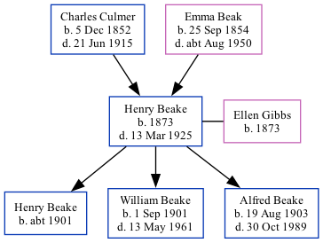

Henry Gage Beake 1873 - 1925
[ Home ] | [ Calendar ] | [ Surnames Index ] | [ Family History ]A waggoner on a farm and horseman and the child of Charles Culmer (an agricultural laborer) and Emma Beak, Henry Beake, the first cousin twice-removed on the mother's side of <a href="I1.html">Nigel Horne</a>, was born in Preston, Wingham, Kent, England in 1873<span class="citation">1,2,3</span>, was baptized there on Jan 19, 1873 and married Ellen Gibbs (with whom he had 3 children: <a href="I1366.html">Henry C</a>, <a href="I1368.html">William Gage Edmund</a> and <a href="I1367.html">Alfred Willoughby John</a>) in St Nicholas-at-Wade, Kent, England on Oct 22, 1898<span class="citation">5</span>.</p><p>Henry spent all of his life in Kent, England. Throughout his life, he lived in several places around the county: at 3 Serene Place, Broadstairs on Mar 31, 1901<span class="citation">1</span>; at Hale Cottages, The Street in St Nicholas-at-Wade on Apr 2, 1911<span class="citation">6</span>; and at Down Barton Farm in St Nicholas-at-Wade on Jun 19, 1921<span class="citation">7</span> and in 1925. Henry In 1921 he was working at William Smith Farmer.<p>He died on Mar 13, 1925 in Canterbury, Kent<span class="citation">2,4</span>.
Parents
- Charles was born on Dec 5, 1852
- Emma was born on Sep 25, 1854
Children
- Henry C was born c. 1901
- William Gage Edmund was born on Sep 1, 1901
- Alfred Willoughby John was born on Aug 19, 1903
Citations
- 1901 England, Wales & Scotland Census - Findmypast (was age 28 and the head of the household)
- England & Wales deaths 1837-2007 - Findmypast
- Kent, Canterbury Archdeaconry marriages 1538-1928 - Findmypast
- England & Wales Government Probate Death Index 1858-2019 - Findmypast
- Kent, Canterbury Archdeaconry marriages 1538-1928 - Findmypast
- 1911 Census for England & Wales - Findmypast (was age 38 and the head of the household)
- 1921 Census Of England & Wales - Findmypast (was age 48 and the head of the household)
Media
Henry Gage Beake - probate

England & Wales deaths 1837-2007 - BMD/D/1925/1/AZ/000067/071
Kent, Canterbury Archdeaconry marriages 1538-1928 - GBPRS/CANT/M/97245691/1
England & Wales marriages 1837-2008 - BMD/M/1898/4/AZ/000027/375
1911 Census for England & Wales - GBC/1911/RG14/04478/0101/1
England & Wales Government Probate Death Index 1858-2019 - GBOR/GOVPROBATE/C/1925-1925/00005630
1901 England, Wales & Scotland Census - GBC-1901-0007464495
Family Tree
Generated by Ged2Site. Last updated on Jul 20, 2025